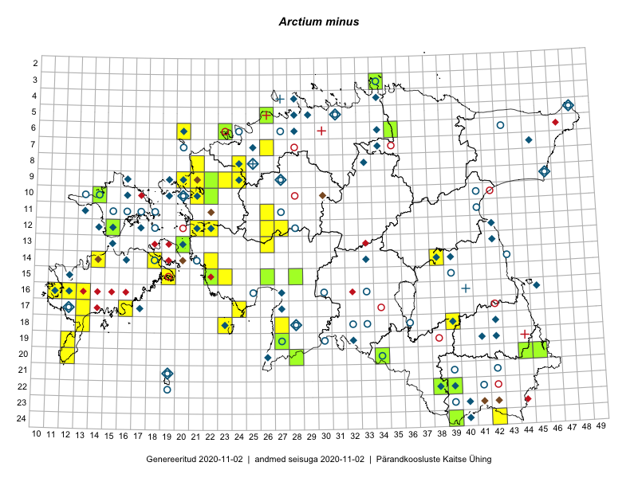

Arctium minus
Uuendatud: 2016-12-01
Kaardile koondatud taksonid: Arctium minus (Hill) Bernh.

Kaart põhineb 94 kirjel.
Kuvatud viited 20 esimesele andmebaasikirjele, ülejäänud PlutoFis
- Toomas Kukk, Thea Kull, Timo Luhamäe, Ott Luuk, Peedu Saar: 2015-06-28: 13-26: ala
- Peedu Saar, Ott Luuk: 2015-08-13: 24-42: GPS punkt
- Peedu Saar, Ott Luuk: 2015-08-13: 24-42: ala
- Eeva-Maria Jeletsky, Tarmo Niitla: 2015-05-17: 13-37: ala
- Eeva-Maria Jeletsky, Tarmo Niitla: 2015-05-16: 13-38: ala
- Eeva-Maria Jeletsky, Tarmo Niitla: 2015-05-03: 13-39: ala
- Eeva-Maria Jeletsky, Tarmo Niitla: 2015-04-26: 13-41: ala
- Eeva-Maria Jeletsky, Tarmo Niitla: 2015-05-17: 14-37: ala
- Thea Kull: 2015-08-07: 14-38: ala
- Eeva-Maria Jeletsky, Tarmo Niitla: 2015-05-16: 14-38: ala
- Eeva-Maria Jeletsky, Tarmo Niitla: 2015-05-05: 15-37: ala
- Eeva-Maria Jeletsky, Tarmo Niitla: 2015-05-05: 15-38: ala
- Eeva-Maria Jeletsky, Tarmo Niitla: 2015-06-26: 10-12: ala
- Eeva-Maria Jeletsky, Tarmo Niitla: 2015-06-28: 11-13: ala
- Ott Luuk, Peedu Saar: 2015-08-24: 12-22: ala
- Eeva-Maria Jeletsky, Tarmo Niitla: 2015-06-25: 12-15: ala
- Eeva-Maria Jeletsky, Tarmo Niitla: 2015-07-26: 21-39: ala
- Eeva-Maria Jeletsky, Tarmo Niitla: 2015-07-17: 22-38: ala
- Eeva-Maria Jeletsky, Tarmo Niitla: 2015-07-24: 22-39: ala
- Eeva-Maria Jeletsky, Tarmo Niitla: 2015-07-15: 23-38: ala